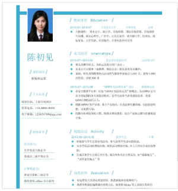

原文连接:https://www.cnblogs.com/tangshiwei/p/11803677.html
前言
这是我个人面试系列的第二篇文章，在第一篇文章中我主要分享了一下我之前面试大厂的部分面试题，很高兴得到了许多前端小伙伴儿的支持和点赞。平心而论，我的学历和背景并不是很突出，只能算普通，但幸运的是还是有机会接收到某些大厂(比如携程、哔哩哔哩、流利说、喜马拉雅等)的面试邀请，当然也不排除公司紧急招人的情况。但是我内心其实还是可以感觉到，可能是我在制作简历的过程中思考出的一些小技巧在起作用，毕竟在我使用这些小技巧之前，我的简历也曾是石投大海，但是修正之后很明显看到面试邀请增多了，但我不知道这些技巧是否适用于每个前端人员，我只是想在这里将我的思考过程和心得总结出来，和大家一起分享，更希望能帮助广大的前端小伙伴儿成功走进自己心仪的那家公司。
第一篇文章入口：记一次大厂的面试过程
正文
正文部分我甚至会从新建一个word文档开始，一步一步从外到内，从上到下分析简历中所需要的每个模块以及每个模块中的内容梳理，当然这都是我自己个人的心得，如果您不喜欢，也请不要诋毁我弱小的心灵哈！
1. 简历标题
创建word文档准备制作简历的时候，肯定会让你输入一个明确的标题，也就是word文档名称，这个标题很不起眼，但是在你将简历发送给HR后，很可能会因此丧失自己的一次面试机会。试问如果你是正在整理简历的HR，当你的视线中出现大把大把如下这样标题的简历：
(1) "新建Microsoft Word文档"
(2) "我的简历、简历、求职简历、前端、前端简历、应聘简历"
(3) "某某网站的简历模板、某某网站在线模板、应聘前端模板"
你会疯掉吗？我是会疯掉，我当然只会对那些我感兴趣的标题产生注意，同时可能会毫不犹豫PASS掉那些乱七八糟标题的简历，因为从某种意义上来说，格式舒适的标题甚至能减少我的工作量，减少我整理的烦恼，HR也是人，就像程序员天天改Bug一样，改得多了也就容易烦躁，所以标题格式很重要，可以给HR留下一个比较好的印象，如下的格式我觉得都可以：
(1) "姓名 + 岗位名称"
(2) "姓名 + 岗位性质"
(3) "姓名 + 岗位名称 + 招聘平台"
(4) "姓名 + 学历 + 学校 + 工作年限 + 岗位名称"
(5) "姓名 + 学历 + 学校 + 工作年限 + 岗位名称 + 意向城市"
2. 切忌封面
当然这个也是我个人的主观想法，不要在你的简历正文出现之前多加一张封面图，有些人特别是刚出来的毕业生，艺术细胞过于浓厚，觉得简历搞得漂亮一点会非常吸引面试官的眼球，这样简历打印出来的时候，展现给他们的首先就是华丽炫酷的封面，你以为他会立马看上你，我想说的是too young too simple，他只会觉得他的眼睛受到了刺激。试问如果你是一个面试官，在你面前摆着100份有着华丽炫酷封面的简历(特别是那种封面上没有任何个人信息的，如图1，图2相对图1而言要稍微好点，如果你硬要使用这种的话，我也不反对，但我也并不推荐，因为封面上的信息相对单一，无法让对方直接获取到重要信息)，而当你想在这堆简历中进行相互比对筛选的时候，却不知从何找起，只能一份又一份地打开封面，然后去查看他的重要信息，这对面试官来说无疑增加了工作量，你以为的美好，却是偷鸡不成反蚀把米。所以说，两个字：直接，让面试官在第一时间看到你最重要的信息，才能容易记住你。
图1(笔者强烈反对)：
图2(笔者不反对，但也不推荐)：
3. 排版简单
我建议是采用从上到下依次展示模块的方式，因为人普遍是比较容易接受中规中矩的从上到下的阅读顺序的，一旦需要上下左右的连续切换时，时间长了也就容易视觉疲劳，所以我推崇越简单越好的从上到下的排版模式(如图4)，而不建议使用左右排版的方式，例如左边侧边栏放置个人信息模块，右边放置工作经验等模块(如图3)，排版简单可能会增加面试官对你的印象分。
图3(笔者不推荐)：

图4(笔者推荐)：
4. 颜色单一
切记，千万不要在你的简历中混杂各种各样的字体颜色和背景色(如图5)，你觉得很好看，但这不是选秀，面试官需要的是一份让他看起来很舒服的简历，白纸黑字，一目了然，他看着简历舒服，看你自然也就舒服了，切勿画蛇添足，耍一些虚头虚脑的小聪明。
图5(笔者不推荐)：
5. 模块划分
这部分主要来讲下简历中需要哪些模块，当然因人而异，我讲述的是在我自己的简历中的模块划分的方式，如果您有自己的想法也是可以的。
5.1 个人信息
这是简历最上方的第一个模块，将自己的个人信息以最快的方式给到HR和面试官，这样HR和面试官在筛选和查阅简历的时候能方便地查看到你的信息，个人信息中可以包含以下几点：
(1) 姓名
(2) 性别
(3) 院校
(4) 专业
(5) 电子邮箱(尽量不要使用qq邮箱，这可能会让面试官觉得你很low)
(6) 联系方式
(7) github地址(如果有开源项目或者个人项目的话)
(8) 博客地址(如果你有写博客分享技术的话)
以上几点中我是建议将github地址和博客地址放在个人信息中，而不是简历末尾，这样能让面试官在第一时间看到你的加分项，从而增加选择你的可能性。
5.2 求职意向
这部分是简历上的第二个模块，你需要明确向面试官表明你的求职态度，让他觉得你不是一个随意找工作，没有人生目标的人，相反你是一个在认认真真找工作，有方向的人，可以包含以下几点：
(1) 工作类型(不要写兼职，只写全职，证明你是一个专业的全职前端人员)
(2) 工作地点(写明你的工作地点，让面试官觉得你的目标坚定)
(3) 工作职能(写明你是web前端工程师，不要写其他无关的岗位，驴唇不对马嘴)
(4) 所属行业(这项可有可无，前端人员就是计算机软件、科技互联网等)
5.3 技能描述
这部分是仅次于求职意向的第三个模块，这个模块至关重要，并且这个模块的存在和缺失会直接影响你的面试邀请数量，至少对我来说是这样的，因为在我增加这个模块之前，面试邀请一直不太理想，后来修正之后得到了很明显的反馈。但是要注意的是，并不是单纯有了这个模块就可以了，内容也是非常重要，所以我这里想多聊聊内容方面的注意事项：
(1) 内容条理清晰，多个不同的技能采用阿拉伯数字以有序列表的方式从上到下进行排序，给面试官一种干净整洁的感觉
(2) 排序要分清主次等级，最擅长的技能排在前面，以此类推，最不擅长的排在最后面，面试官很大的几率只会关心你前5条的内容，因为他在面试你之前很有可能已经提前准备了自己的一套问题，他想尽快问完他在你的简历上看到的那点东西，然后等着你跳进他早已挖好的坑，并且很乐意在旁边看着你早已懵逼的表情。所以把你最擅长的技能放在最前面，让他觉得这些技能你确实很擅长
(3) 技能数量尽量保持在5-10个，不要太多，更不要太少，太多觉得你学艺不精，太少觉得你菜到不行，合理的技能数量才能让面试官觉得你看起来靠谱
(4) 关键字眼捕捉，如今前端的主流框架Vue、React、构建工具Webpack、版本控制Git、JS主流标准ES6，以及服务端开发Node，这些关键字眼如果一个都不在你的技能描述中，那我只能说你还没有做好面试的准备，还需要继续复习。如果你正在走进高级前端的行列，那么你肯定不能只停留在会用的阶段，底层原理也是跑不掉的。所以这是我所说的关键字眼捕捉，让面试官在你的简历中找到他最感兴趣的技术点才能对你有兴趣
(5) 切勿滥竽充数，我上面说过技能数量尽量保持在5-10个，同时最不擅长的排在最后面，这里的最不擅长指的是你在项目中运用过，但是你只是简单掌握，了解的不深入。切记千万不要把你完全不懂的技术或者说你一年前接触过，但现在已经记不太清的技术也凑上去。我不敢保证面试官一定是从上往下问，如果他问到你不擅长的技术，那你会尴尬得很惨，所以一个简单的道理，不要打必败的仗
(6) 切勿出现"精通"字样，"精通"意味着你愿意接受最高难度的面试题，面试官可以随便问你，如果你不是多年征战沙场的老将军，那你的"精通"只会让面试官觉得可笑，所以就用"熟练掌握"吧，即使你真的很强，那就在面试中展现你的强大，面试官反而觉得你是谦虚，深藏不露。
图6(笔者推荐，内容自定义)：
5.4 工作经验
这部分是第四个模块，这部分内容主要是用来描述你到目前为止工作过的公司履历，如果你是刚毕业，你也可以将自己的实习公司写上去，但是前提是你的工作内容是前端，而不是其他不相关的行业。如果你是工作多年的老手，你也没必要将每个公司都写进去，写你最近的比较自豪的几个公司就行了，不要给人一种跳槽频繁的印象，工作经验中可以包含以下几点：
(1) 该公司的入职时间-离职时间(建议不要随便写，可能有背调)
(2) 公司名称
(3) 公司岗位职责(写明你在公司负责的岗位就是前端工程师)
(4) 公司所在部门(可写可不写)
(5) 工作描述(很重要，条理清晰地写明你在公司中所负责的哪些项目以及你在该项目中所承担的职责，如图7)
图7(笔者推荐)：
5.5 项目经验
这部分是第五个模块，同时也是一个至关重要的模块，也会直接影响你的面试邀请数量。我相信大部分人应该是有自己比较拿得出手的项目了，或者如果你说你是刚毕业或者刚参加完培训出来找工作，那么在学校你应该会有自己的个人项目(如果没有那得抓紧啦)，在培训公司也会有自己的练手项目，只要是你自己做的项目，都可以拿出来，毕竟有总比没有强。但是有一种情况就是，你明明写了很多项目，并且也用到了很多前沿的前端框架，这些项目对你来说收益很大，而面试邀请却少得可怜，这是因为你没有正确地将他们表达出来，这部分内容就来教你如何表达以及表达中的注意事项：
(1) 项目标题要创新，你觉得在这个项目中使用了最流行的前端框架，并且你也在项目中解决了大量头疼的技术难点，这使得你的技术水平得到了质的飞越，但它确实是一个后台管理系统，如果你直接用"某某某后台管理系统"，这个标题就直接拉低了面试官对你的印象分，让他觉得你的项目复杂度也就一般，毫无亮点，如果你尝试创新一下，改用"某某某智能化科技平台"，逼格蹭蹭地往上涨，项目的含金量也就蹭蹭地往上涨了
(2) 项目描述要具体，写清楚该项目在公司中所处的定位和所发挥的作用，如有必要的话也可以加上该项目主要包含哪些核心模块，方便面试官能快速对该项目有一个初步的了解
(3) 责任描述要清晰，责任描述主要是描述你在该项目中所负责的具体内容，这部分内容包含了你在代码层面的具体实践，从HTML5和CSS3的页面布局，到ES6逻辑编写，到路由跳转控制，到数据状态管理，到自动化工具打包构建，到部署上线，一系列的流程都可以往上面写，同样建议采用阿拉伯数字以有序列表的方式进行排序，重要的在前，不重要的在后，条理清晰总是会给人留下深刻的印象(如图8)
(4) 项目数量尽量保持在5个以内，不要太多，更不要太少，太少很明显会觉得你的项目经验不够，太多一方面会撑大你的简历页数，一方面你能保证你还记得你一年前做的那些项目，并且面试官刚好碰巧问到那些以前的项目，你能准确无误地答上来？所以不要给自己挖坑，留下那些你印象最深的项目总归是一个不错的选择
图8(笔者推荐，内容自定义)：
5.6 个人荣誉
这部分是第六个模块，这部分内容对我个人而言就显得不是那么重要了，但是如果有比较突出的荣誉也是鼓励大家往上面写的。我也有见过写驾驶证的，我当然知道考驾照不容易，大家都不容易，但是说真的，你又不是面试司机，写这个真的没有太大的意义，把你的C1照去掉吧，换成你的四六级，哈哈。。
5.7 自我简介
这部分是第七个模块，之所以放在最后一个模块来写，是因为基本上面试官都不会看的，所以就不要放到前几个模块去浪费地方了，除非你的内容中有非常吸引人的地方或者说有让面试官眼前一亮的字眼，比如你的github项目的star数量，你自己建立的微信技术交流群等等，也算是不错的加分项。另一个小技巧就是一般的招聘要求中会有该公司的价值观或者技术团队的核心主旨，复制下来，放到你的自我简介中，让面试官觉得，没错，我今天遇上了对的人。
6. 发送简历
前五个步骤我们基本上已经完成了一份简历的制作，在发送简历给面试官之前，你需要做的是再三检查你的内容是否有误，不要将一份错误的简历发送过去，因为你没有第二次发送的机会，即使有，你的印象分也已经被拉低，所以三思而后行。如果你觉得你的颜值很高，是帅哥哥漂亮姐姐，那么你可以将你的电子照片补上去，如果不是，那请你告诉我你放上去的意义，那只能证明你是个活物。切记，不要发送Word格式的简历，请改成PDF格式，保证你的格式在别人的电脑上一定没问题。发送之前尽量让你的简历页数保持在2页，如果超过，请适当调整简历内容，至此，你已经成功完成了一份简历的发送。
7. 等待邀请
等待的过程是痛苦的，一般中小型公司在发送简历之后会有比较快速的反馈，但是大厂还是有一定的等待期的，短则两三天，长则半个月，不要简历投了三天半没反应就在那儿哭爹喊娘，其实只是面试官还没有时间看到而已。如果你看了我的这篇文章后，面试邀请增多了，那就跟我点个赞咯，如果还是没有变化，那请你也不要诋毁我弱小的心灵，可能是我总结得还不够多，帮不了你。
总结
这篇主要是给大家分享了一下我自己在做简历中的一些心得，可能并不适用于每个人，我只是想尽我的一点点微薄之力，帮助那些跟我一样学历和背景不突出的人，让他们能有更大的希望走进他们心仪的公司，成就自己的人生，good luck。。
交流
今天先分享到这里，基于正文部分所列出的要求，笔者自己整理了一份简历模板，如果大家有兴趣可以关注咱们的公众号，我可以发给你哈。后续笔者开始记录和整理自己平时学习前端所学到的东西，还希望能和大家相互讨论技术，一起交流学习。
文章已同步更新至Github博客，若觉文章尚可，欢迎前往star！
你的一个点赞，值得让我付出更多的努力！
逆境中成长，只有不断地学习，才能成为更好的自己，与君共勉！